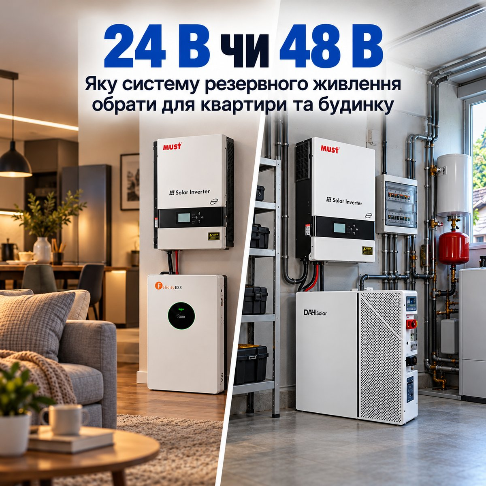

24 В чи 48 В: яку систему резервного живлення обрати для квартири та будинку?
Чим відрізняються системи резервного живлення на 24 В і 48 В, як напруга впливає на струм і навантаження, чому вона не дорівнює запасу енергії та що краще обрати для квартири, а що для приватного будинку.
Під час відключень електроенергії хочеться, щоб звичне життя не зупинялося. Щоб удома залишалося світло, працював холодильник, був доступ до інтернету, а необхідною технікою можна було користуватися без зайвих обмежень. Забезпечити такий комфорт допомагає система резервного живлення, але її можливості залежать від правильно підібраного обладнання.
Під час вибору інвертора часто зустрічаються позначення 24 В і 48 В. За цими цифрами прихована важлива різниця, яка впливає на роботу системи, її здатність витримувати навантаження та можливості подальшого розширення. Розберемося, чим відрізняються ці варіанти та який із них краще підійде для квартири чи приватного будинку.
Що означають 24 В і 48 В
Позначення 24 В і 48 В вказують на напругу, з якою працює акумуляторна частина системи резервного живлення. Саме від акумулятора інвертор отримує енергію та перетворює її на звичні 230 В, необхідні для роботи домашньої техніки.
При цьому напруга самого акумулятора може дещо відрізнятися від зазначеної в характеристиках інвертора. Наприклад, у системах на 24 В часто використовують LiFePO4-акумулятори з номінальною напругою 25,6 В, а в системах на 48 В зазвичай встановлюють батареї на 51,2 В. Це нормальна особливість такого обладнання, яку виробники враховують під час його розробки.
Чому різниця відчутна під навантаженням
Різниця між системами 24 В і 48 В стає особливо помітною, коли одночасно працює кілька потужних приладів. Наприклад, якщо загальне споживання техніки становить 2400 Вт, система на 24 В потребуватиме струму близько 100 А, тоді як для 48 В достатньо приблизно 50 А. Ці значення наведені без урахування втрат енергії.
Чим менший струм, тим менше нагріваються кабелі та з’єднання за однакових умов. Саме тому системи на 48 В часто обирають для живлення потужної техніки та великої кількості приладів. Проте ефективність резервного живлення залежить не лише від напруги, а й від характеристик інвертора, акумулятора та правильного підключення всіх компонентів.
Коли 24 В цілком достатньо?
Для квартири система на 24 В часто є цілком достатньою. Вона дозволяє залишатися зі світлом, користуватися інтернетом, холодильником, ноутбуком та іншою необхідною технікою під час відключень електроенергії.
При цьому можливості 24-вольтових систем не обмежуються лише невеликими навантаженнями. Наприклад, у нашому каталозі є комплект із інвертором MUST на 4 кВт та акумулятором Felicity, який підійде і для більш вимогливої техніки. Важливо лише правильно розрахувати навантаження та підібрати акумулятор із достатнім запасом енергії.
Для будинку 48 В часто практичніше
У приватному будинку потреба в електроенергії зазвичай більша. Крім холодильника та освітлення, тут працюють насоси, опалювальне обладнання, кухонна та інша побутова техніка. Деякі прилади під час запуску на короткий час споживають значно більше енергії, тому інвертор має бути готовим і до таких навантажень.
Якщо під час відключень потрібно забезпечити електроенергією не лише основну техніку, а й інші побутові прилади, система на 48 В буде більш доречною. Вона краще справляється з високими навантаженнями та дозволяє згодом збільшити запас енергії, додавши сумісні акумулятори. Для таких потреб можна розглянути комплект MUST PV19-6048EXP потужністю 6 кВт з акумулятором DAH Solar на 5,12 кВт·год.
Напруга не дорівнює запасу енергії
Напруга акумулятора ще не говорить про те, як довго він зможе живити техніку. Тут важливіший запас енергії, який вимірюється в кіловат-годинах (кВт·год). Наприклад, акумулятор 25,6 В ємністю 100 А·год накопичує 2,56 кВт·год, а батарея 51,2 В з такою самою ємністю вже 5,12 кВт·год.
Проте це не означає, що система на 48 В завжди працюватиме довше. Акумулятор на 24 В із більшою ємністю може зберігати навіть більше енергії. Тому, якщо хочете знати, на скільки годин вистачить заряду під час відключення світла, звертайте увагу насамперед на запас енергії батареї, споживання ваших приладів та втрати під час роботи інвертора.
На що ще звернути увагу перед покупкою
Не менш важливо подумати про те, як система працюватиме в повсякденному житті. Якщо електроенергію вмикають лише на кілька годин, акумулятор має встигати зарядитися до наступного відключення. Також варто заздалегідь знайти місце для обладнання, врахувати шум інвертора, вентиляцію та сумісність усіх компонентів. А от підключення до домашньої електромережі краще довірити фахівцю.
Не завжди є сенс купувати найпотужніше обладнання. Для одних потреб цілком вистачить 24 В, а для інших зручніше буде 48 В, особливо якщо з часом виникне потреба збільшити потужність системи або запас енергії.
Головне, щоб під час відключень ви могли користуватися потрібною технікою без постійних хвилювань про залишок заряду. Ознайомитися з різними варіантами та порівняти їхні характеристики можна в каталозі комплектів автономного енергоживлення.